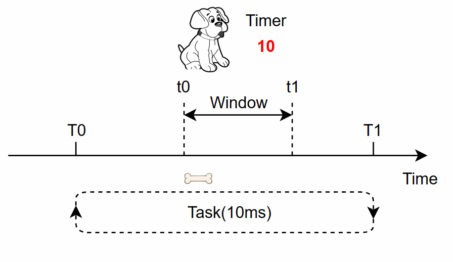
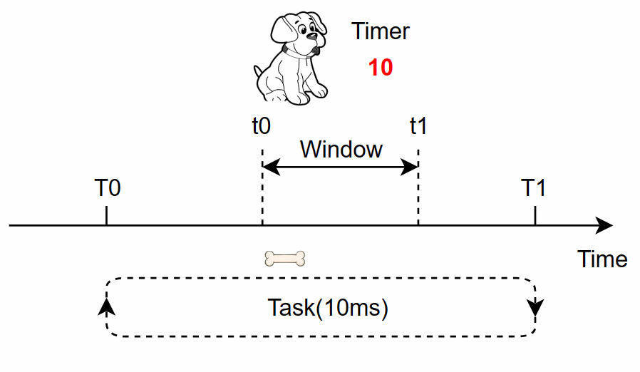
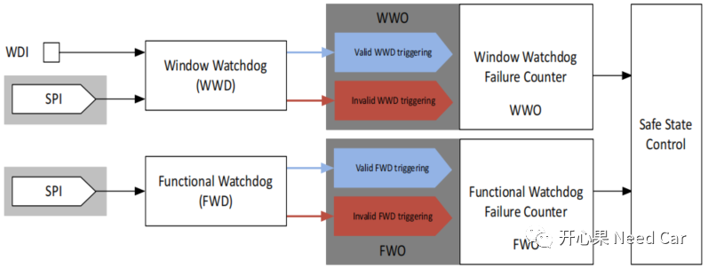
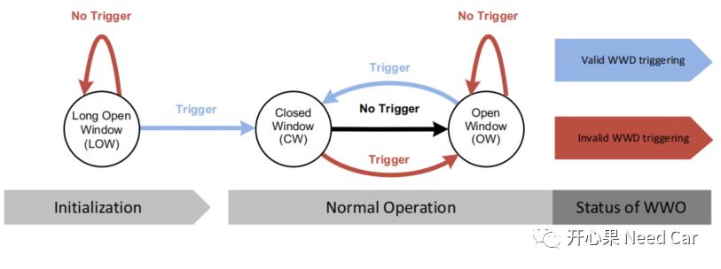
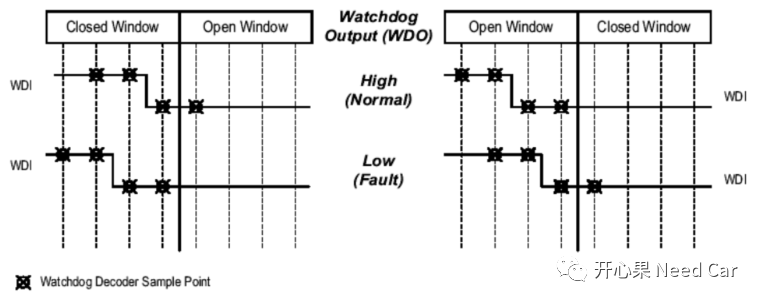
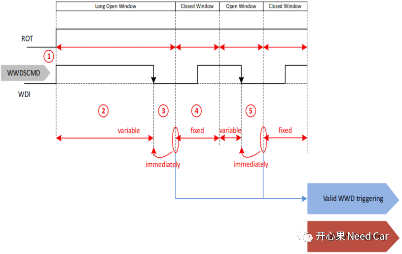
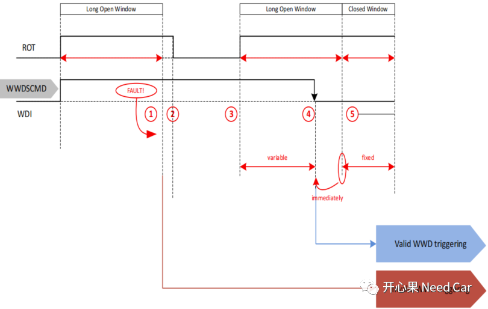

为了确保软件程序运行的可靠性，往往会设计外狗和内狗，让这些"狗子们看着"（监控）程序运行状态。当程序偏离预期的运行状态时，即：在喂狗的窗口期内，没有有效喂狗时，通过Reset等操作尝试恢复程序。本文，主要聊一下TLF35584的外狗——Window Watchdog。外部看门狗的主要作用：监控uC。在讨论TLF35584的外狗之前，我们先类比一下现实中的喂狗。小狗的主人（类似uC），每天（等同周期任务，eg：10ms Task）给小狗喂饭（骨头，等同于喂狗的代码），且每天定时定点的喂（eg：每天早上7:00~8:00，7:00~8:00等同喂狗的窗口—Window）。
（一）如果主人每天（T0~T1时间，eg：10ms）都在7:00~8:00（t0~t1时间段）给小狗喂骨头（小狗在t0~t1时间看到骨头，相等于重置定时器Timer = 10ms），小狗很开心，吃饱了，不会随便"汪汪汪"，如下所示：

（二）如果主人某天有事（等同于Task被过度抢占，任务超时等），没有在7:00~8:00（t0~t1）给小狗喂骨头，小狗很饿，开始"汪汪汪"，如下所示：

没有在规定的时间内喂狗，对于ECU来说属于异常行为，为了使ECU能重新工作，一般会采取ECU Reset的方式，让ECU重新尝试工作。
TLF35584包含两种类型的看门狗：WWD（window watchdog）和FWD（functional watchdog）。两个看门狗相互独立，均可以独立配置、使用。对于WWD，有两种触发方式（喂狗方式）：WDI和SPI。对于FWD，只能使用SPI方式触发。WWD和FWD示意如下所示：

确保uC运行的可靠性，需要有效（Vaild）的"喂狗"，所谓有效的喂狗，是指：正确的时机执行正确触发（Trigger）动作。
（一）WWO（Window watchdog output）
怎么理解："正确的时机执行正确触发动作呢？"，如下图：

在软件运行的生命周期内，喂狗主要分为两个阶段：初始化阶段和正常操作阶段。
- 初始化阶段：在程序初始化阶段，由于软件程序刚启动，需要初始化的软/硬件模块较多，相比于正常操作阶段，喂狗的时间可以适当延长，避免程序初始化过长导致Reset，这个阶段称为LOW（Long Open Window）；
- 正常操作阶段：此阶段分为两个窗口期，CW（Closed Window）和OW（Open Window）。
- "Trigger"是指通过SPI指令向WWDSCMD寄存器写TRIG命令或者触发WDI Pin；
- 在LOW中，如果"No Trigger"，则认为是“Invalid WWD triggering”，且LOW再次重启；
- 在LOW中，进行"Trigger"操作，认为是“Valid WWD triggering”，LOW关闭，进入CW；
- 在CW中，"Trigger"被认为是“Invalid WWD triggering”；
- 在CW中，在一定时间内，“No Trigger”将进入OW；
- 在OW中，"Trigger"被认为是“Valid WWD triggering”，且立即切换到CW；
- 在OW中，如果“No Trigger”则被认为是“Invalid WWD triggering”。
提示：OW和CW的长度通过配置WDCFG0.WDCYC、WWDCFG1.OW、WWDCFG0.CW决定。如上的"Trigger"，怎样是Vaild?对于WDI来说，检测（周期性采样）到WDI Pin下降沿被认为是Valid Trigger，即：VWDI,high to VWDI,low。为了避免噪声（noise）和毛刺（glitch）干扰，对于WDI Pin采样时，至少采样2次连续高电平+连续2次低电平被认为是Valid Trigger。对于Vaild Trigger和Invalid Trigger示意如下所示：
（二）Normal operation: Correct triggering
（1）检测到ROT（Reset output） Pin由低到高变化，进入LOW阶段，LOW持续时间由WDCYC配置决定（600ms或者60ms）；（2）在LOW阶段检测到Vaild Trigger时，进入CW状态，CW保持一段时间，eg：300ms。进入OW阶段；
（3）在OW阶段，进行Vaild Trigger，立马切换到CW状态，周而复始。
（三）Fault operation: No trigger in OW

（1）在LOW阶段，第一次Invaild Trigger，导致ROT拉低，使得uC复位（“Soft-Reset”，输出电压保持），经过一段延时（Trd），ROT再次拉高，如果依然Invaild Trigger，则会进行“Hard-Reset”（输出电压关断），如果第三次Invaild Trigger，则TLF35584进入FAILSAFE状态；（2）如果在LOW阶段，第二次是Vaild Trigger，则进入CW状态，之后状态同有效触发。
点击下方关注，一起聊聊Autosar/嵌入式，如果需要，联系作者进群，给你更专业的解答